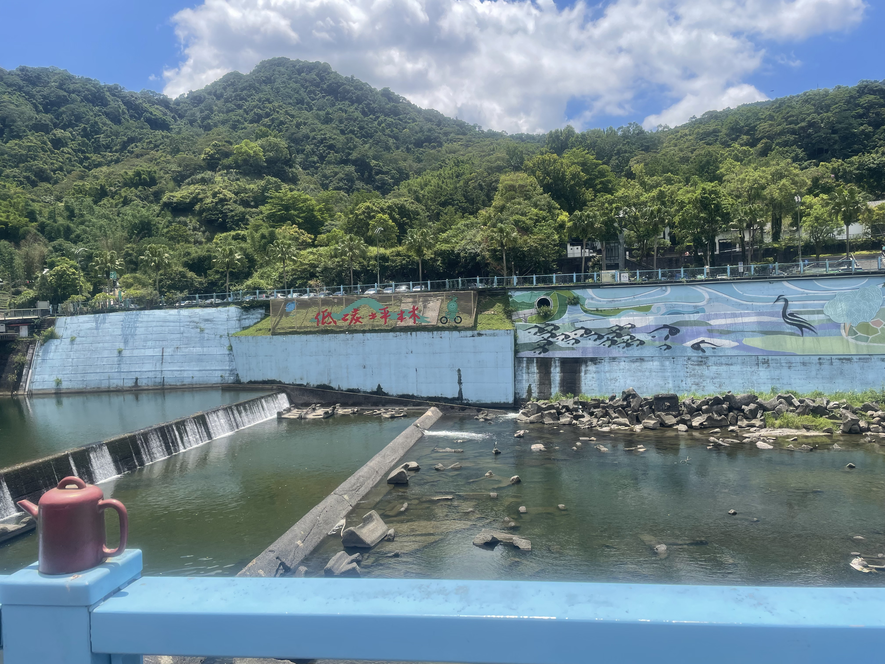
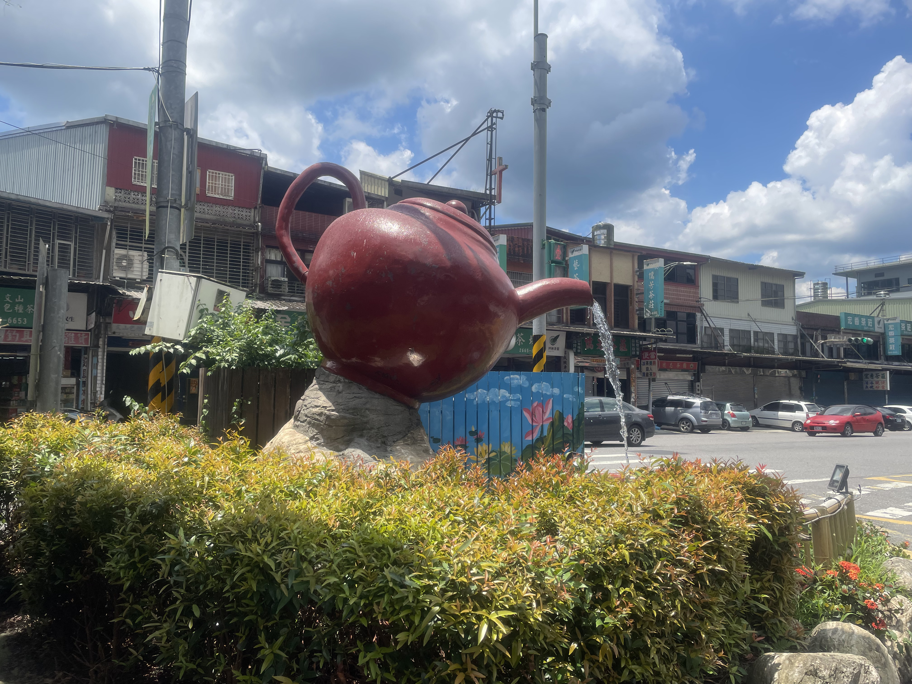
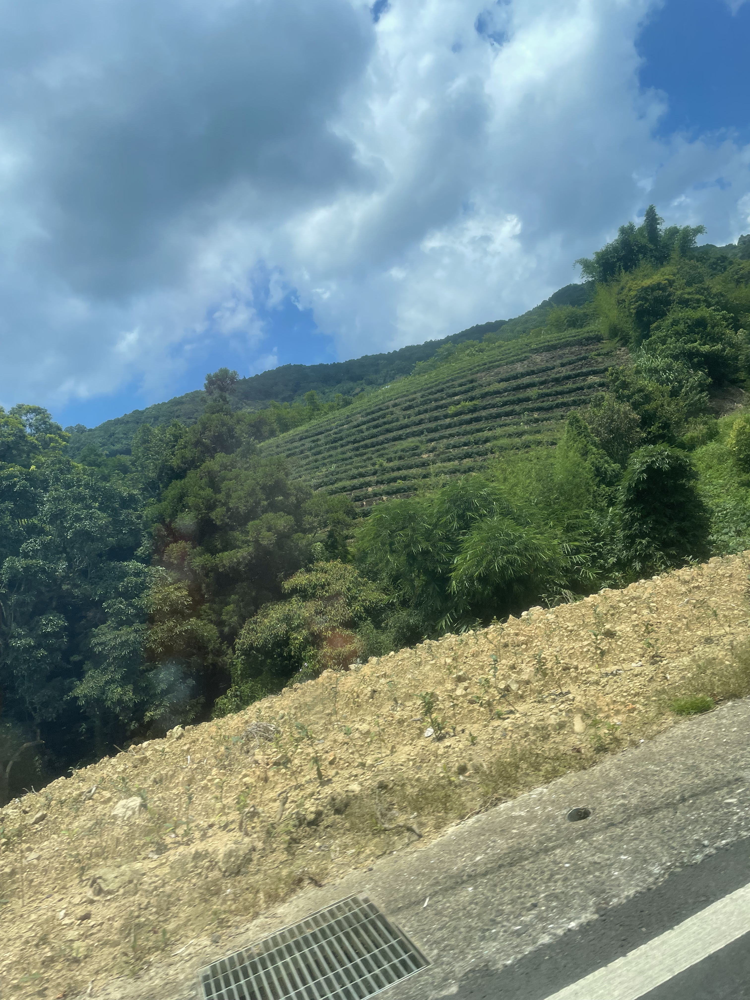
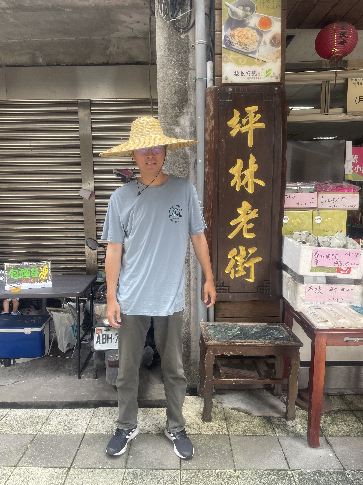
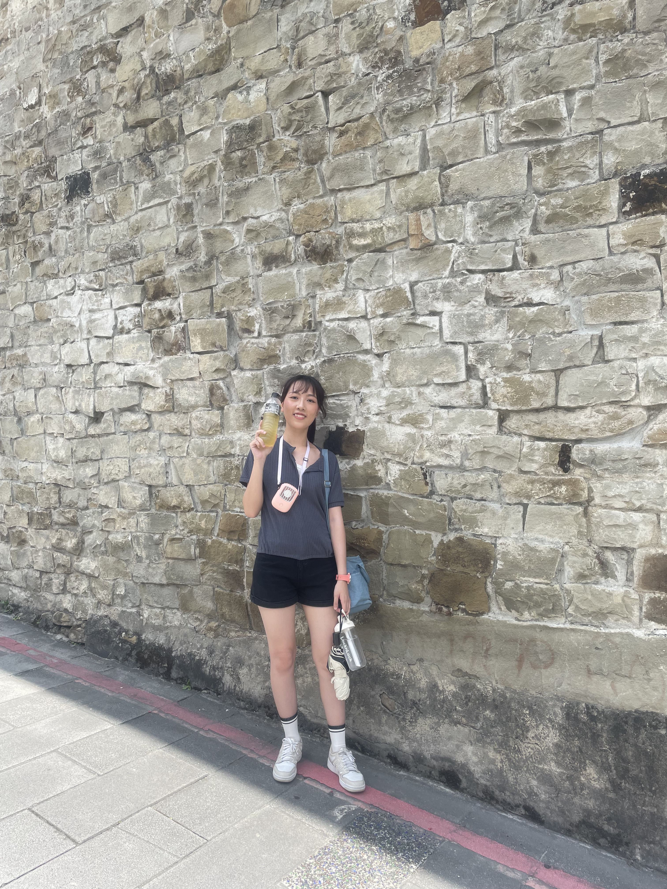
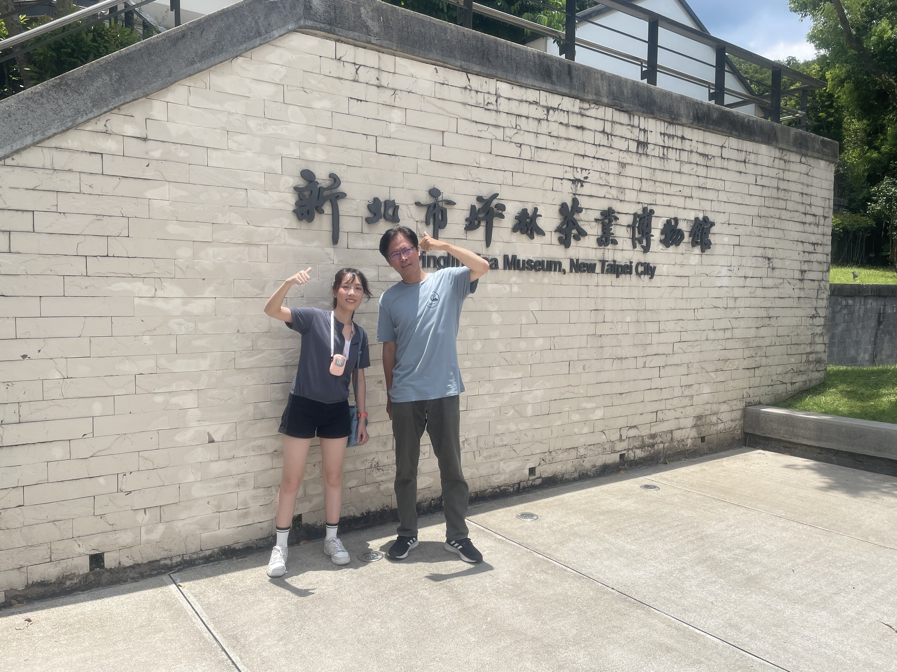

新北市坪林區
基本資訊
位於新北市東北部，地處山區，東鄰宜蘭縣，北靠雙溪區，南接深坑區與新店區，地形以丘陵與山谷為主。坪林區以自然環境保存完整、茶葉產業發達及清幽的山林景觀聞名，是台北都會區少數仍保有濃厚鄉村與自然特色的行政區。 坪林區的發展歷史與茶葉栽培密切相關，早期以農業與茶園為主，逐步形成茶業聚落，茶文化深植地方生活。區內仍保留傳統農村聚落風貌與石砌老街，呈現自然與人文共存的景象。 交通方面，坪林以台九線（北宜公路）連結台北市與宜蘭，是前往北宜山區的主要通道，方便民眾通勤及旅遊。區內生活機能雖不如都市密集，但具備基本公共設施與商業服務，並保有山區特有的清幽環境。
推薦景點
| 坪林茶葉博物館
是專門展示坪林茶葉文化與製茶工藝的文化場館，也是台灣少數以茶業為主題的博物館之一。坪林因山區氣候與地理條件適合茶葉栽培，自清代以來便發展出豐富的茶文化，博物館的設立正是為了保存與傳承這段歷史。 館內展示包括茶葉栽培、採收、製茶流程及茶具演進，並透過模型、實物與影音展示，呈現茶葉從茶園到茶杯的完整過程。參觀者還可以透過互動體驗區，實際感受揉茶或品茗的樂趣，加深對坪林茶文化的理解。 博物館建築本身融合現代設計與地方特色，設有展覽空間、教學區及休憩區，讓遊客在欣賞展品之餘，也能享受舒適的環境。整體而言，坪林茶業博物館不僅是文化教育與觀光景點，也是坪林茶鄉歷史與傳統技藝的重要保存場域。
| 坪林老街
是坪林茶鄉的重要歷史街區，也保留了早期茶業發展的生活樣貌。老街沿著溪谷而建，街道以石板鋪成，兩側多為傳統矮屋與茶商店鋪，呈現濃厚的山城聚落風格。 老街聚集多家茶行、茶點店與特色小吃店，遊客可邊漫步邊品茗、購買各式茶葉，體驗坪林茶鄉的生活氣息。街區也保留部分老建築與歷史痕跡，讓人得以想像早期茶商往來、製茶與交易的場景。 此外，老街周邊的自然環境相當優美，溪流與茶園環繞，步行其中不僅能享受文化風情，也能欣賞山林景色。整體而言，坪林老街是結合茶文化、歷史聚落與自然景觀的典型茶鄉街區，也是遊客了解坪林傳統生活與茶產業歷史的重要窗口。





